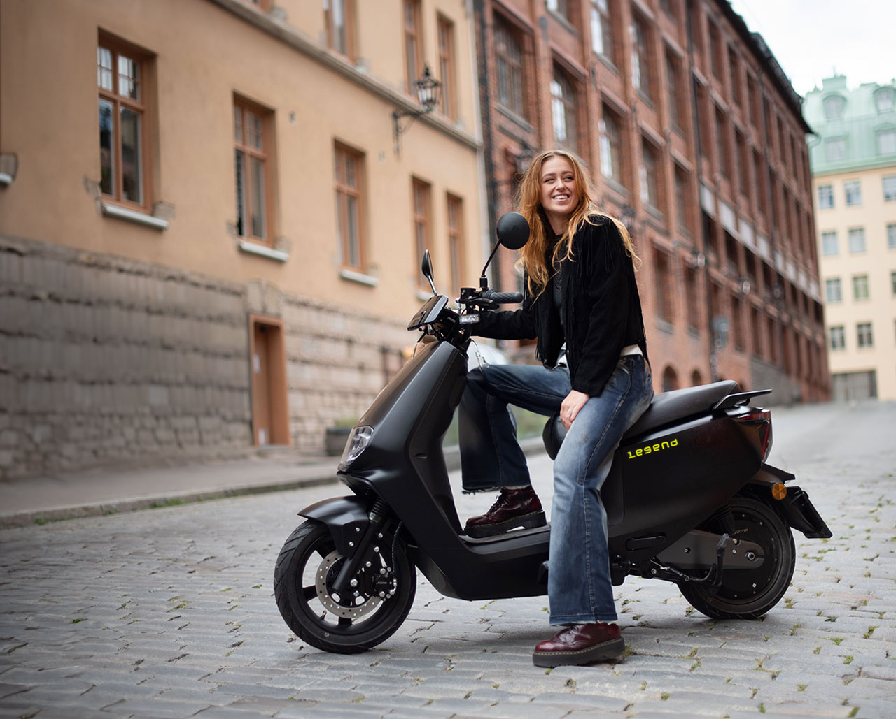
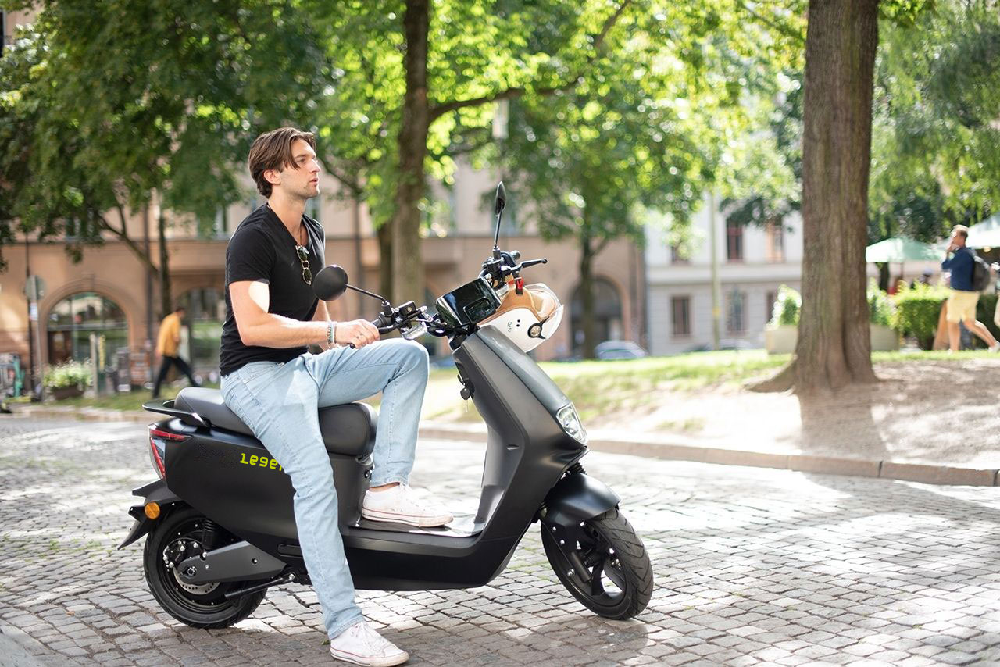
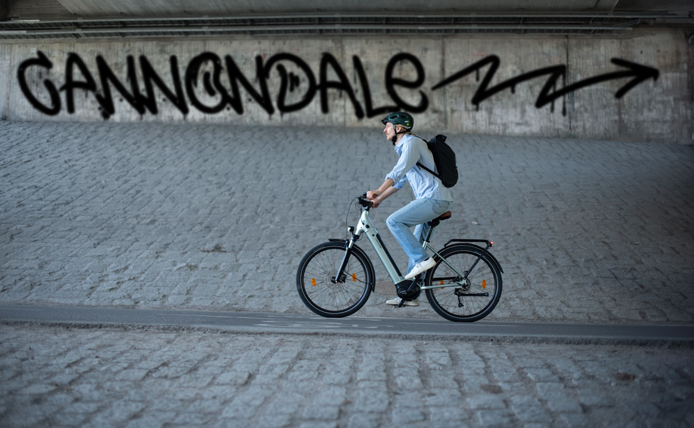
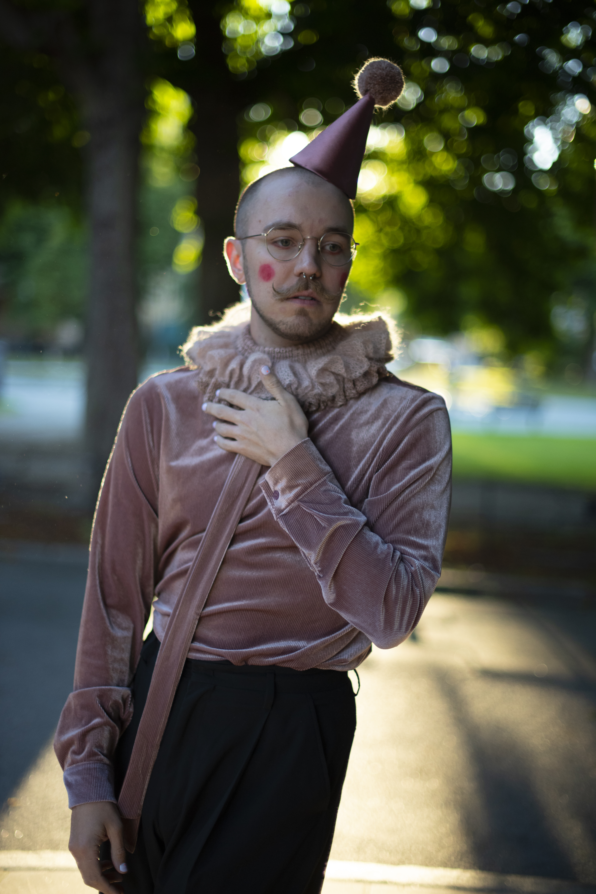
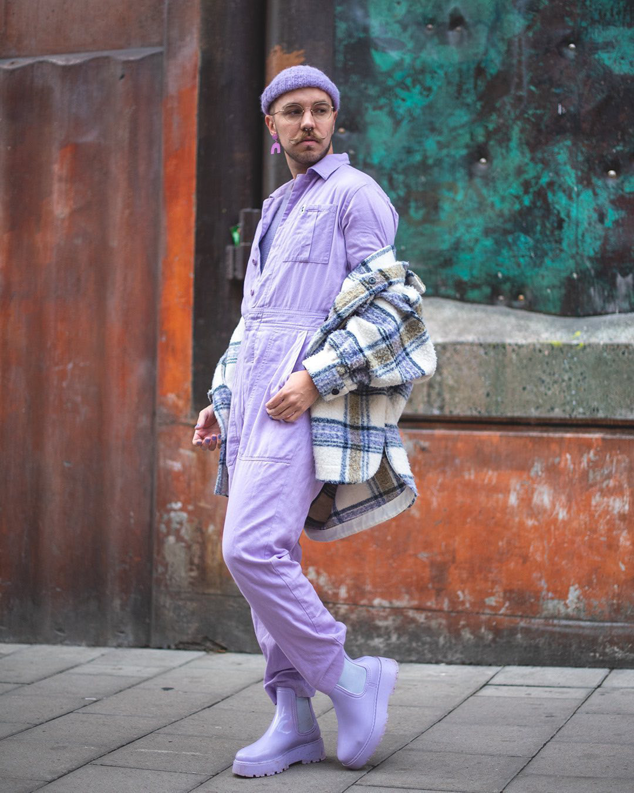
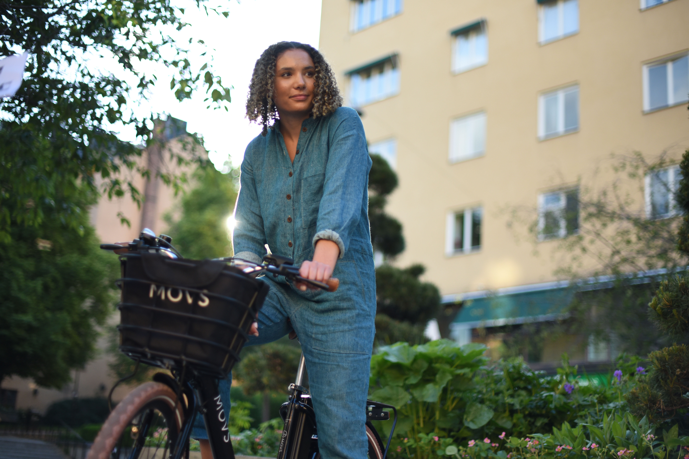

Work
Studio & Lifestyle
I work with product photography across both studio settings and real-life environments, capturing a wide range of subjects — from small, tactile materials like yarn and textiles to larger products in use. My approach is grounded in a sensitivity to light, texture, and color, with an emphasis on creating images that feel both natural and considered.
Whether working in a controlled studio setup or on location with people and surroundings, I aim to balance clarity with atmosphere. The result is imagery that not only presents the product, but also adds a sense of context, mood, and visual storytelling.





